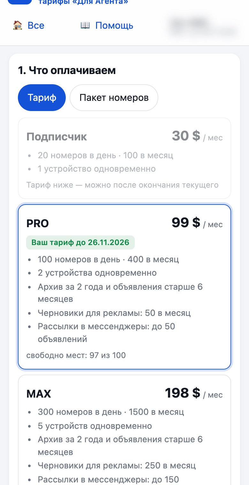
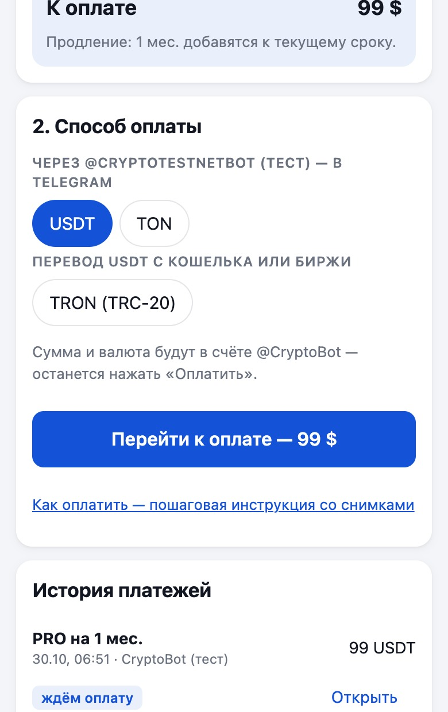
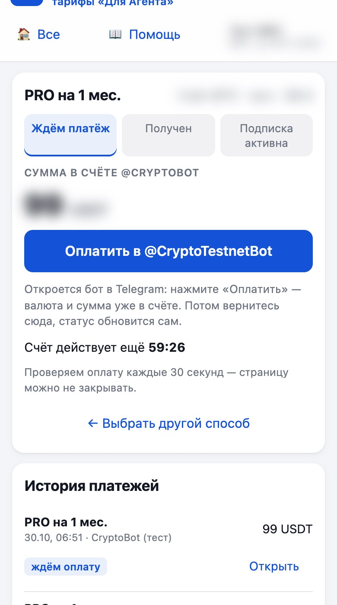
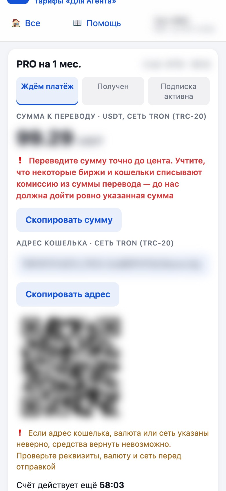
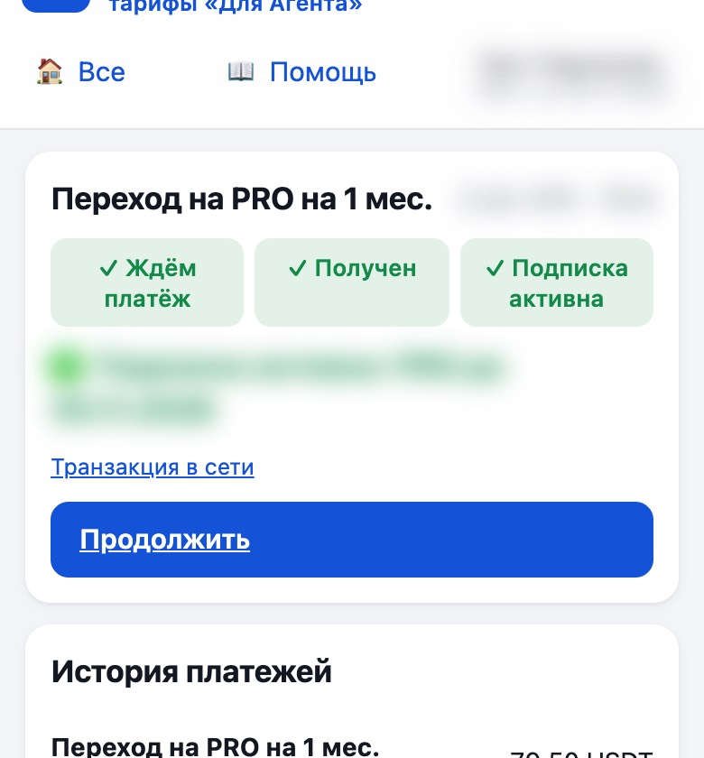

Как оплатить тариф
Оплата — в криптовалюте: через бота @CryptoBot в Telegram или переводом USDT с кошелька или биржи. После оплаты тариф включается сам, обычно за 1–3 минуты. На снимках суммы, адреса и имена размыты.
1. Выберите тариф и срок

- Откройте страницу оплаты: кнопка «Оформить PRO», «Продлить доступ» или «Докупить номера» на сайте.
- Выберите тариф — Подписчик, PRO или MAX — и срок: 1, 3 или 12 месяцев. За 3 и 12 месяцев у PRO и MAX скидка.
- Ниже — расшифровка: цена, скидка, зачёт и сумма «К оплате». Её считает сервер, на странице ничего менять не нужно.
Переход на тариф выше: неиспользованные дни текущего тарифа засчитываются, новый период начинается с даты оплаты. Пример: Подписчик за 30 $, прошло 10 дней из 30 — зачёт 20 $, PRO обойдётся в 79 $.
2. Выберите способ оплаты

- Через @CryptoBot — основной способ. Проще всего, если есть Telegram: валюта и сумма уже в счёте, остаётся нажать «Оплатить». Валюта — USDT или Gram (бывший TON).
- Другой способ — перевод USDT, если у вас кошелёк (Trust Wallet, Tonkeeper и другие) или аккаунт на бирже. Сети: TRON (TRC-20), TON, BNB Smart Chain (BEP-20) — выберите ту, в которой у вас USDT.
Основной способ. Через @CryptoBot

- Нажмите «Перейти к оплате», затем «Оплатить в @CryptoBot».
- В Telegram откроется бот со счётом. Если в кошельке бота нет нужной суммы — пополните его прямо в боте (перевод с биржи или покупка).
- Проверьте сумму и нажмите «Оплатить». Менять валюту и сумму не нужно.
- Вернитесь на страницу оплаты — статус обновится сам.
При оплате в Gram (бывший TON) сумма считается по курсу, который фиксируется дважды в день — в 10:00 и 18:00 МСК. Курс и время его фиксации показаны в счёте.
Другой способ. Перевод USDT с кошелька или биржи

- Выберите сеть и нажмите «Перейти к оплате». В счёте — своя сумма с центами (например, 99.07 USDT): по ней мы находим ваш перевод.
- В кошельке или на бирже: «Отправить» или «Вывести» → USDT → та же сеть, что в счёте.
- Вставьте адрес — кнопка «Скопировать адрес» или QR-код — и сумму — кнопка «Скопировать сумму».
- Подтвердите перевод и вернитесь на страницу оплаты: она проверяет поступление каждые 30 секунд.
❗ Переведите сумму точно до цента. Учтите, что некоторые биржи и кошельки списывают комиссию из суммы перевода — до нас должна дойти ровно указанная сумма
❗ Если адрес кошелька, валюта или сеть указаны неверно, средства вернуть невозможно. Проверьте реквизиты, валюту и сеть перед отправкой
Если биржа вычитает комиссию за вывод из суммы — увеличьте сумму на размер комиссии, чтобы до нас дошла ровно сумма из счёта.
3. Готово

Статус идёт так: «Ждём платёж» → «Получен» → «Подписка активна». Нажмите «Продолжить» — на сайте уже новый тариф и срок. Если в профиле привязан Telegram, бот пришлёт сообщение об оплате.
Частые вопросы
Время счёта вышло, а я уже перевёл. Счёт живёт 60 минут. Перевод, который пришёл позже, найдётся автоматически в течение 2 часов и уйдёт администратору на проверку — он подключит тариф вручную.
Перевёл не ту сумму. Платёж не потеряется: он попадёт администратору «на проверку», и он подключит тариф вручную.
Перевёл не в той сети или не на тот адрес. Такие средства вернуть невозможно — всегда проверяйте сеть и адрес перед отправкой.
Как докупить номера? Пакет 100 номеров за 20 $ добавляется к лимиту на день и на месяц до конца вашего месяца. Повтор уже открытого номера — бесплатно.
Остались вопросы? Напишите администратору сервиса — через кого вы получали доступ.